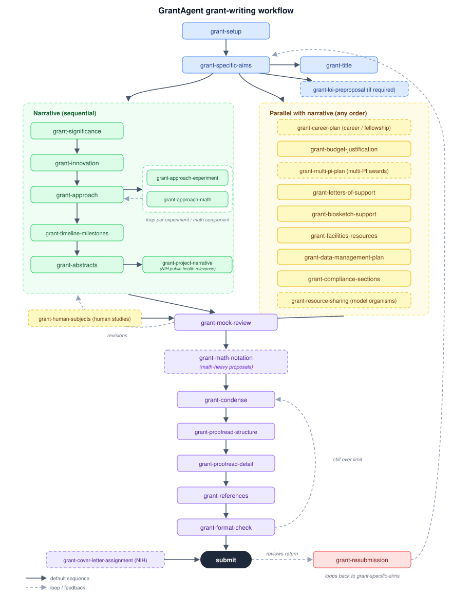

GrantAgent is a suite of 27 Claude skills covering the full lifecycle of a federal research grant — NIH, NSF, DoD, and foundations. From Specific Aims to the final format check.
A skill is a set of expert instructions Claude loads when it recognizes you need it. You never call skills by name — you describe what you're doing, and Claude brings in the right one.
Add the plugin in the Claude desktop app. No coding, nothing installed on your computer beyond Claude itself.
"I'm starting an NIH R01" or "my Research Strategy is over the page limit" — plain language is enough.
Claude sets up an organized project folder, drafts section by section with your approval, and runs reviewer-style checks.
Takes about five minutes in the Claude desktop app. You don't need a GitHub account.
In the Claude desktop app, go to Settings → Customize → Plugins. (Menu wording varies slightly by version — look for "Plugins," "Capabilities," or "Extensions.")
Click Add Marketplace and enter exactly:
In the grant-agent marketplace, install the grant-writing plugin. One plugin contains all 27 skills.
Open a conversation and say, for example: "I'm starting a new NIH R01 application. Can you help me set up?"
Two commands:
Updates arrive automatically when the marketplace refreshes (/plugin marketplace update to force it).
See INSTALL.md for the complete step-by-step guide, troubleshooting, and notes on sharing with collaborators.
Skills follow the natural order of a proposal: setup, then the narrative and support documents in parallel, then review and polish. Solid arrows are the default sequence; dashed arrows are loops and feedback. Order is a default, not a rule.

Every skill reads a shared project config, follows a strict versioning schema, never silently edits a document you haven't seen, and writes in your voice using a style profile built from your prior grants.
grant-setupgrant-specific-aimsgrant-titlegrant-loi-preproposalgrant-significancegrant-innovationgrant-approachgrant-approach-experimentgrant-approach-mathgrant-timeline-milestonesgrant-abstractsgrant-career-plangrant-budget-justificationgrant-multi-pi-plangrant-letters-of-supportgrant-biosketch-supportgrant-facilities-resourcesgrant-data-management-plangrant-compliance-sectionsgrant-mock-reviewgrant-math-notationgrant-condensegrant-proofread-structuregrant-proofread-detailgrant-referencesgrant-format-checkgrant-resubmissionNo commands to memorize — describe the stage you're at.
A few habits make a large difference.
Give Claude the actual FOA/NOFO when you start. Page limits and review criteria then come from your solicitation, not general knowledge — agency rules change often.
During setup, Claude builds a style profile from grants you've written before, so drafts come out in your voice instead of generic prose.
Draft the Approach in one conversation, the budget in another. Starting fresh is cheap — the project's settings file carries everything over.
Conversations don't remember each other. A dropped aim or scope change belongs in the project folder — the skills record these in the config and decision log.
Describing your task is usually enough, but you can always be explicit: "Use grant-mock-review on the current draft."
A mock review is most honest from a conversation that didn't spend hours helping write the text.
The skills show you text before placing it into your documents — take advantage rather than waving edits through.
Condense to the page limit before line-by-line proofreading — no point polishing text that's about to be cut — and leave the format check for last.
That correction belongs in the skill or project config, not in every future conversation. Tell Claude to record it.
Want to extend the suite or write your own skills? These are the principles the suite is built on — the full guidance lives in the skills README.
The agent sees only a skill's name and description when deciding whether to load it. Descriptions must name the phrases users actually type — a perfectly written skill with a vague description never fires.
The skill body costs context every time it fires. Keep the workflow in SKILL.md and push lookup material (agency criteria, checklists) into reference files read only when needed.
Sessions don't remember each other. Durable decisions live in files — a project config, decision log, and notation registry that every skill reads first.
Models follow reasoning better than commandments. Rules in these skills state their rationale instead of stacking MUSTs.
Run each skill on prompts phrased the way researchers actually type — typos and shorthand included — and fix what generalizes, not what's specific to one test.
If a user corrects the agent the same way twice, that correction belongs in SKILL.md, not in every future conversation.
All 27 skills follow the same contracts, so any skill can pick up where another left off.
grant-setup creates 00_admin/project-config.md — funder, mechanism, deadline, document format, page limits. Every other skill reads it first, so nothing is re-explained between sessions.
No flattery, no filler praise. Strengths and weaknesses stated as facts with reasons, and direct disagreement — with evidence — when the science or strategy warrants it.
<document>_v<NN>_<date>_<status>, with status moving draft → internal → shared → final. A version is never overwritten; every session writes a new file.
Text is refined in conversation and placed into documents only after you approve it. Reasoning about choices stays in the chat; the document gets the lean, justified version.
Setup ingests prior grants into a style profile that every drafting skill reads, so new sections recapitulate how you actually write.
Scope changes, dropped aims, and budget shifts are appended to a dated decision log, so late-stage skills can detect and reconcile inconsistencies.
Full text of the conventions and authoring guidance: skills README.